Upload your Photos to Wikimedia Commons!
You can share your photos with the world by uploading them to Wikimedia Commons for anyone to use! To do this you need to have some photos you made using the Record Activity and then start the Browse Activity.
Most pages on Wikimedia Commons can be edited without registering an account. However, users must be logged in to an account in order to upload files. The good news is, once you've registered an account on Wikimedia Commons, you can use that account on all Wikimedia projects. Once you've logged in at one site, you'll be automatically logged in to all the others, too.
Registering
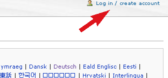
In the top right-hand corner you'll find a link that says "Log in / create account". This link takes you to http://commons.wikimedia.org/wiki/Special:UserLogin .
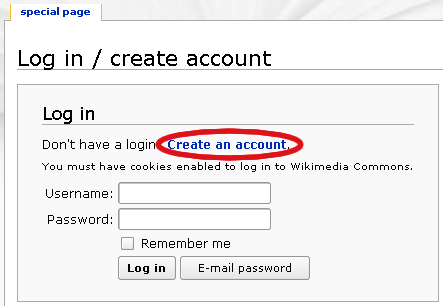
Follow the link to create an account.
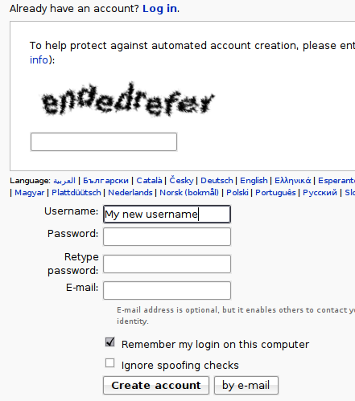
The top part of the screen shows some two fuzzy words mashed together. New users are required to enter the words in the box below. This is known as a "CAPTCHA" and it helps block spammers from automatically signing up hundreds of accounts.
Below the CAPTCHA are some fields for your username, password and e-mail address. Note that
- usernames are case sensitive - "Doug" is different than "DOUG" which is different than "DoUG" which is different than "DOuG" ...
- your username must be unique, so if you can't sign up because someone else already has an account with that name, try making it longer or appending some numbers to the end.
Putting your e-mail address is optional, but it's a good idea. Firstly, it means if you forget your password, you can request a new one to be sent to your e-mail. Secondly, it means you request notification via e-mail if someone leaves you a message on-wiki. This is very useful if you don't intend to return and check the site regularly. Thirdly, it means you can send e-mails via the wiki to other users, and you can allow other users to e-mail you, too.
Logging in
Simply follow the same link to http://commons.wikimedia.org/wiki/Special:UserLogin, enter your username and password and click "Log in".
When you are logged in, you will notice a new set of links in the top right-hand corner, starting with your username, followed by
User links
As a registered user, you have several extra options available to you. The first is your very own user page. This is located at [
This is a good place to put some profile information about yourself, such as your interests and skills. Putting your proficiency in various languages is also useful to let other users know how they can best communicate with you. For special templates for this purpose, see http://commons.wikimedia.org/wiki/Commons:Babel .
Your talk page, located at [
You can respond to messages on your talk page either in place on it, or on the other person's talk page. (There is probably a link in their signature to their talk page.) Be sure to sign all messages you write on talk pages by appending your messages with four tildes: ~~~~. When you save the page, these are automatically converted into a link to your user page and a timestamp.
Your watchlist is where you can see the latest changes made to pages that are on your watchlist. By default, files you upload have their Image pages added to your watchlist. This means you can follow the changes that other people make to your file's descriptions. You can also add pages to your watchlist by opening the "edit" tab and ticking the box that says "Watch this page".
Under your contributions, you'll find a list of all the edits or uploads you've done, starting with the most recent. This can be useful if you remember editing an interesting page but forgot to add it to your watchlist.
Setting your preferences
There are dozens of preferences available, but just a few of the most important are covered below.
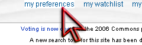
Follow the right-hand corner link to http://commons.wikimedia.org/wiki/Special:Preferences .
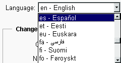
Under "User profile", there is a drop-down list for "Language". This changes the language that interface messages (e.g. menu links) are presented in. If you are more comfortable with a language other than English (which is the default) then it's definitely worth changing this to your preferred language.
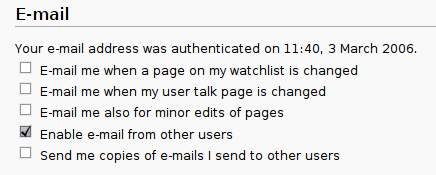
At the bottom under the "E-mail" section there are a number of preferences. If you don't intend to check the site regularly, it's a good idea to tick the option for "E-mail me when my user talk page is changed".
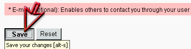
Don't forget to save your preferences!
Uploading your first file
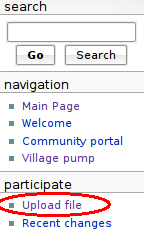 So you've made some creative work, found a Wikimedia project page that it can improve, registered an account and logged in. Time to start uploading!
There's a wiki page which you might find useful to help guide you through this process as well: http://commons.wikimedia.org/wiki/Commons:Contributing_your_own_work.
The first link in the menu on the left under "participate" is "Upload file", which leads to http://commons.wikimedia.org/wiki/Commons:Upload.
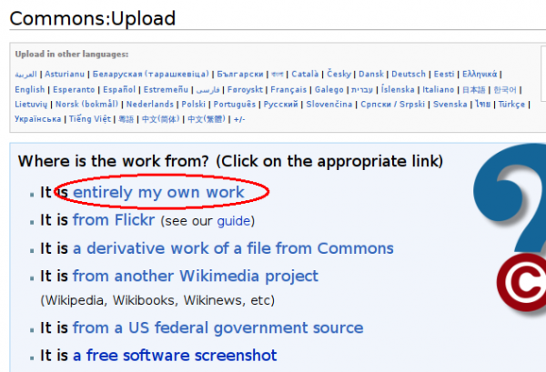
At Commons:Upload, the first link leads to the "Upload your own work" form.
Navigating the upload form
The top half of the form contains need-to-know information about what constitutes ones "own work" (for example, taking a screenshot typically does not), and information and categories and licensing. The bottom half of the form contains fields for you to fill out about your work.
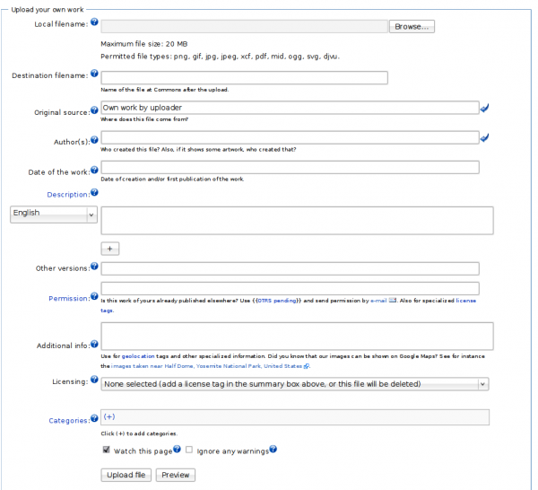
Each field has a small question mark icon next to it. Clicking this icon reveals a small help box. Clicking it again makes the help box disappear.
The first few fields are pretty easy. Clicking the "Browse" button gives you a view of your local files so you can choose the one you want to upload. Doing this automatically fills out the Destination filename field. Be sure to change the "Destination filename" to something descriptive if it's not already. It's not straightforward to change file names after they've been uploaded, which means it's important to choose a good filename the first time around. You can append your name or the date to the filename if you're concerned it won't be specific enough.
The Original source field should be already filled out, and your username should be present in the Author(s) field. If you would rather be credited as your real name rather than your username, feel free to delete the text already there and put your preferred name.
In Description you find a text box for an English description by default. You can use the drop-down menu on the left to change it to a different language if you prefer, or click the "+" button to add a field for another language (if you feel competent to write a description in multiple languages).
When writing the description, write it as if you are describing the image to someone who can't see it. That is, after all, what you're doing -- the description is of most benefit to users searching the site. Of course, if it's a complex scene that requires explanation, that also belongs in this field -- but don't neglect the basics.
Other versions is only necessary if you are uploading an edited version of an existing file. So most of the time it's fine to leave this blank. Likewise, Permission is mostly relevant when you're uploading other people's works, rather than your own. So this one can also be left blank. Additional info is also fine to leave blank.
The final two fields are Licensing and Categories. These are both important.
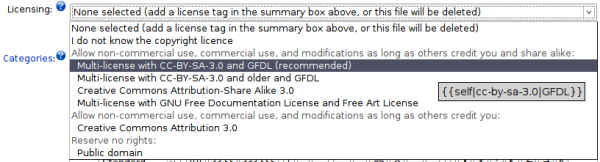
Although this is a pretty simple little drop-down box, it represents some significant thinking. Free content licenses can't be revoked, so it's best to do all the hard thinking about it once, fairly early on, and after that just pick your choice without giving it so much thought.
A separate FLOSS Manual chapter, "Choosing a license", is available at http://en.flossmanuals.net/WikimediaCommons/License .
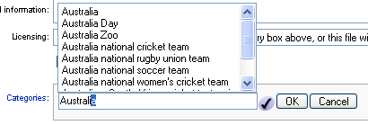
In Categories, clicking the "(+)" produces a text field. When you start to type in it, existing categories appear in a list above the text field. When you choose one from the list, click "OK" to add the file to that category. This can be repeated for multiple categories.
Categories are similar to but not exactly the same as "tags", commonly used in sites like Flickr. Categories are hierarchical, which means only the most specific category for a particular aspect of a file should be added. For example, if you add the category Paris to a file, you don't need to add France as well.
When you're new to Wikimedia Commons, don't worry too much about finding the best categories. At least one relevant category is what's most important. You will find that over time, other community members will sort your files into more specific categories. That's the beauty of a wiki!
Other places to upload images and videos
There are an ever-growing number of websites that host image or video collections. Perhaps the most popular are Facebook, Flickr, and YouTube. But you may want to explore sites that are more friendly to the non-proprietary formats used by Record, such as Dailymotion (http://dailymotion.com), which lets you upload OGG-formatted videos.
Author : UploadToWikimedia
© BriannaJane Laugher 2008
Modifications:
Morgan Collett 2008
Tom Boyle 2008
Walter Bender 2008
License : General Public License
Produced in FLOSS Manuals (http://www.flossmanuals.net)